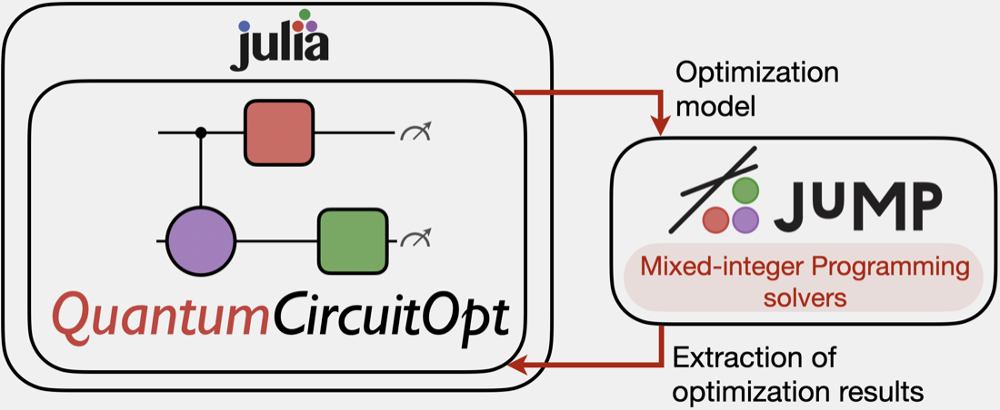
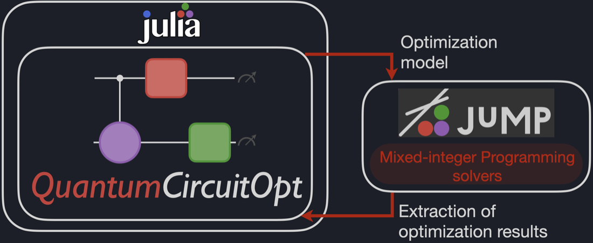
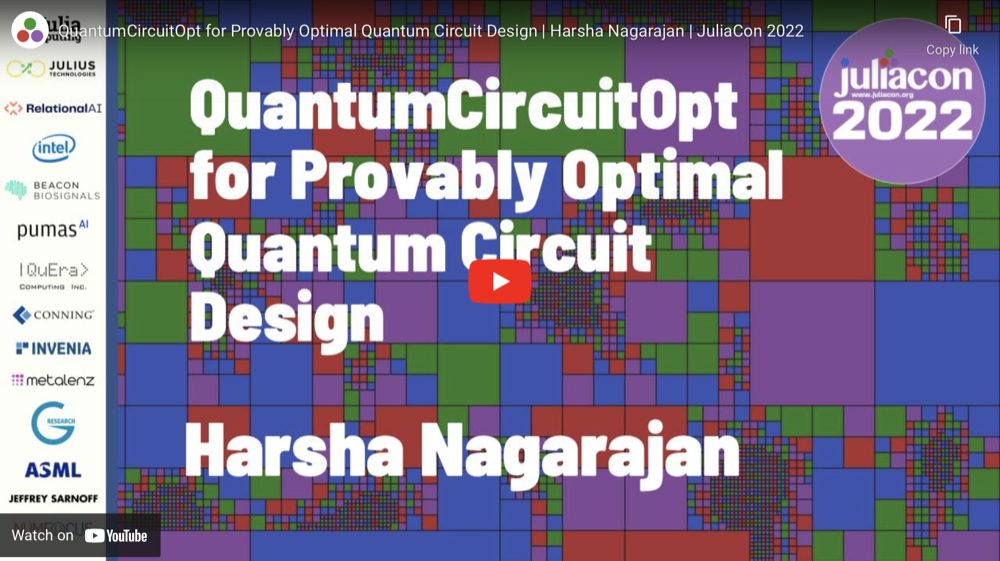
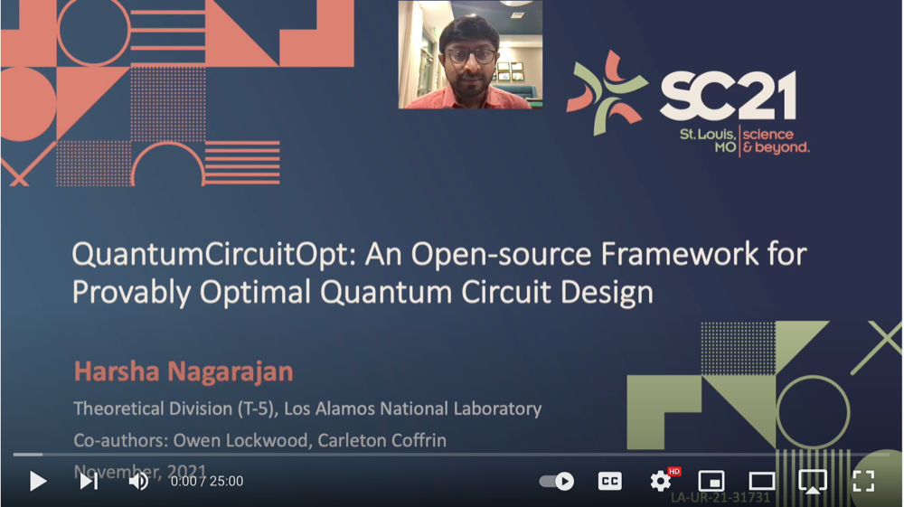

Quick Start Guide
Framework
Building on Julia, JuMP, and mixed-integer programming (MIP) solvers, QuantumCircuitOpt (QCOpt) is an open-source toolkit for optimal quantum circuit design. QCOpt provides an abstraction layer with two primary goals:
- Capture a target quantum computation, the available hardware-native gates, and circuit-design requirements in a JuMP optimization model.
- Extract, analyze, and validate the optimizer solution as an exact, globally phase-equivalent, or approximate circuit decomposition.
The optimization model searches over discrete gate choices and circuit depths, allowing QCOpt to certify global optimality for objectives such as circuit depth, CNOT count, and T-gate count.


Video tutorials
November 2022: Presentation link from the Third Quantum Computing Software Workshop, held in conjunction with the International Conference on Supercomputing (SC22). This presentation introduces the role of nonlinear programming formulations in optimal quantum circuit design. Additional technical details are available in the associated paper.
July 2022: The JuliaCon 2022 presentation introduces the package and demonstrates its principal features. The conference program is available here.

- November 2021: Presentation from the Second Quantum Computing Software Workshop, held in conjunction with the International Conference on Supercomputing (SC21). It presents the technical foundations of QuantumCircuitOpt, which are also described in the associated paper.

Getting started
Install QCOpt, JuMP, and a compatible MIP solver. Gurobi is recommended for computationally difficult instances. IBM CPLEX and the open-source HiGHS solver are also supported.
User inputs
Circuit specifications are passed as a Dict{String,Any} named params in the examples.
| Mandatory circuit specifications | Description |
|---|---|
num_qubits | Number of circuit qubits (2 to 10). |
maximum_depth | Maximum decomposition depth (at least 2). |
elementary_gates | Nonempty vector of supported one-, two-, or multi-qubit gate labels. |
target_gate | Target unitary matrix to decompose. |
If elementary_gates contains gates with continuous angle parameters, supply the corresponding discretizations:
| Mandatory angle discretizations | Description |
|---|---|
RX_discretization, RY_discretization, RZ_discretization | Angles in radians for RXGate, RYGate, or RZGate. |
Phase_discretization | Angles in radians for PhaseGate. |
R_θ_discretization, R_ϕ_discretization | Polar and azimuthal angle grids in radians for RGate. |
U3_θ_discretization, U3_ϕ_discretization, U3_λ_discretization | Euler-angle grids in radians for U3Gate. |
CRX_discretization, CRY_discretization, CRZ_discretization | Angles in radians for controlled rotation gates. |
CU3_θ_discretization, CU3_ϕ_discretization, CU3_λ_discretization | Euler-angle grids in radians for CU3Gate. |
GR_θ_discretization, GR_ϕ_discretization | Polar and azimuthal angle grids in radians for GRGate. |
U1Gate and U2Gate are available as matrix constructors. For discretized elementary-gate inputs, use the equivalent PhaseGate or U3Gate parameterizations.
| Optional circuit specifications | Description |
|---|---|
objective | minimize_depth, minimize_cnot, or minimize_T (default: minimize_depth). Include Identity when minimizing depth. |
decomposition_type | exact_optimal, exact_feasible, optimal_global_phase, or approximate (default: exact_optimal). |
initial_gate | Initial condition at depth zero. Only Identity is currently supported (default: Identity). |
set_cnot_lower_bound | Lower bound on the number of CNot/CX gates. |
set_cnot_upper_bound | Upper bound on the number of CNot/CX gates. Set both bounds to the same value to fix the count. |
input_circuit | Warm-start circuit as Vector{Tuple{Int64,String}}. Depths must be consecutive from 1, and every gate must occur in elementary_gates (default: empty). |
Optimization model inputs
Model settings are passed through the optional options::Dict{Symbol,Any} keyword argument to build_QCModel or run_QCModel. Defaults are defined in get_default_options.
| Optional model inputs | Description |
|---|---|
model_type | compact_formulation or balas_formulation (default: compact_formulation). |
all_valid_constraints | Disable (-1), configure individually (0), or enable (1) all valid inequalities (default: 0). |
commute_gate_constraints | Eliminate symmetric orderings of commuting gates (default: true). |
involutory_gate_constraints | Eliminate consecutive involutory gate pairs (default: true). |
redundant_gate_pair_constraints | Eliminate gate pairs equivalent to another elementary gate (default: true). |
identity_gate_symmetry_constraints | Eliminate identity-gate symmetry (default: true). |
idempotent_gate_constraints | Eliminate repeated idempotent gates (default: false). |
convex_hull_gate_constraints | Add convex-hull constraints for complex gate entries (default: false). |
fix_unitary_variables | Fix unitary variable entries whose values can be inferred (default: false). |
unitary_constraints | Add unitary-property constraints (default: false). |
unitary_complex_conjugate | Conjugate-transpose constraints: disabled (0), linear (1), or linear and quadratic (2) (default: 1). |
visualize_solution | Print the decomposition after optimization (default: true). |
relax_integrality | Relax integer variables to continuous variables (default: false). |
optimizer_log | Enable optimizer console output (default: true). |
objective_slack_penalty | Approximation slack penalty (default: 1e3). |
time_limit | Optimizer time limit in seconds (default: 10_800). |
Sample circuit synthesis
This example minimizes the depth of a controlled-Z decomposition using CNOT and discretized U3 gates:
import QuantumCircuitOpt as QCOpt
using Gurobi
using JuMP
params = Dict{String,Any}(
"num_qubits" => 2,
"maximum_depth" => 4,
"elementary_gates" => ["U3_1", "U3_2", "CNot_1_2", "Identity"],
"target_gate" => ComplexF64[
1 0 0 0
0 1 0 0
0 0 1 0
0 0 0 -1
],
"objective" => "minimize_depth",
"decomposition_type" => "exact_optimal",
"U3_θ_discretization" => -π:(π / 2):π,
"U3_ϕ_discretization" => -π:(π / 2):π,
"U3_λ_discretization" => -π:(π / 2):π,
)
model_options = Dict{Symbol,Any}(
:model_type => "compact_formulation",
:visualize_solution => true,
:optimizer_log => false,
)
optimizer = optimizer_with_attributes(Gurobi.Optimizer, "Presolve" => 1)
results = QCOpt.run_QCModel(params, optimizer; options = model_options)Change target_gate and elementary_gates to synthesize another circuit. See the examples directory for more decompositions.
Globally optimal quantum circuit synthesis is a combinatorial optimization problem whose computational cost can grow rapidly with num_qubits, maximum_depth, and the number of elementary gates. This difficulty is intrinsic to the circuit-synthesis problem; see this reference.
Commercial MIP optimizers such as Gurobi may be faster on difficult instances. Gurobi provides free academic licenses.
Extracting results
run_QCModel returns a Dict{String,Any}. Common result fields include:
optimizertermination_statusandprimal_statusobjectiveandobjective_lbsolve_timesolution, which maps model variable names to their values
For example:
results["solve_time"]
results["objective"]Visualizing results
run_QCModel prints a feasible decomposition by default. To render a saved result explicitly:
data = QCOpt.get_data(params)
QCOpt.visualize_solution(results, data)The example produces the following output with Gurobi Optimizer 13.0.0:
=============================================================================
QuantumCircuitOpt version: 0.6.3
Quantum Circuit Data
Number of qubits : 2
Maximum circuit depth : 4
Decomposition type : exact_optimal
MIP optimizer : Gurobi
Number of input gates : 72 (presolved)
Input gates : Qubits
CNot : {1,2}
U3 : 1,2
U3_ϕ : [-180.0, -90.0, 0.0, 90.0, 180.0]
U3_θ : [-180.0, -90.0, 0.0, 90.0, 180.0]
U3_λ : [-180.0, -90.0, 0.0, 90.0, 180.0]
Optimal Circuit
depth 1 : I ⊗ U3(90.0,0.0,180.0)
depth 2 : CNot_{1,2}
depth 3 : I ⊗ U3(90.0,0.0,180.0)
Optimal number of gates : 3
Optimal circuit depth : 3
Optimizer run time : 1.7 sec.
=============================================================================